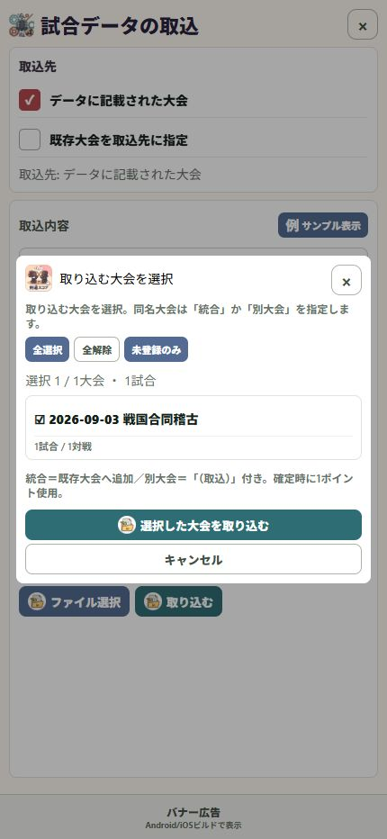

12 / 受け渡す
大会と同名選手を確認する
名前が同じでも、別の大会・別の選手かもしれません。確認してからまとめます。
操作の入口試合データの取込 → 大会選択・重複確認
必要な大会を選ぶ
取り込む大会をチェックします。同名大会がある場合は、既存大会への統合か別大会としての取込かを確認します。
選手の名前と所属を比べる
「重複する選手を確認」が表示されたら、取込データと登録済み候補の両方を見ます。
同じ人なら統合先を選ぶ
同一人物と確認できた場合だけ「この選手に統合」を選びます。同姓同名だけでは判断しません。
別人なら分けて取り込む
「別の選手として取り込む」を選びます。判断できない場合は「取り込みをやめる」で確認し直せます。

